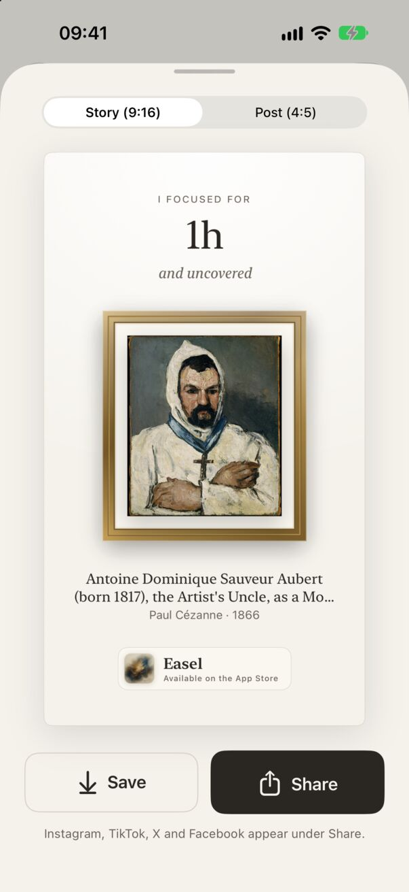

Make a card
- Tap Share: on the finished painting at 0:00, on a painting’s page in your gallery, on the gallery itself, on a milestone or at the end of Year in Review.
- Choose Story (9:16) for Stories and Reels, or Post (4:5) for feeds.
- Tap Save to add it to Photos, or Share to open the share sheet.

Instagram, TikTok, X and others
Instagram, TikTok, X, Facebook, Messages, WhatsApp and Mail all appear under Share, as long as the app is installed. When the destination accepts text, Easel adds a short line and a link to the App Store with the card.
Saving to Photos
The first time you tap Save, iOS asks to let Easel add to your photo library. Easel can only add images; it can’t see or read your photos. If you declined, turn it on in the iPhone Settings app under Apps → Easel → Photos.